O guia mostra os 7 erros que travam a frutífera em vaso, e como corrigir cada um. Mesmo em apartamento.
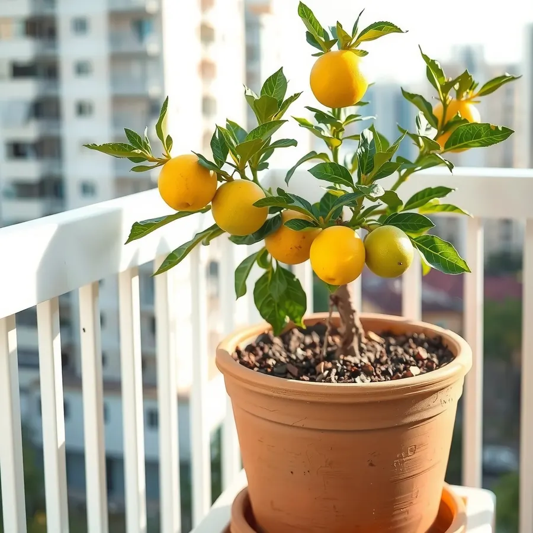
Pagamento único · Acesso imediato · Garantia de 7 dias
E todos têm solução.
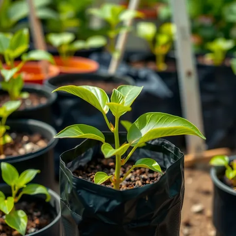
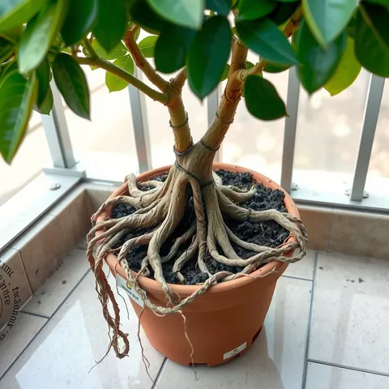
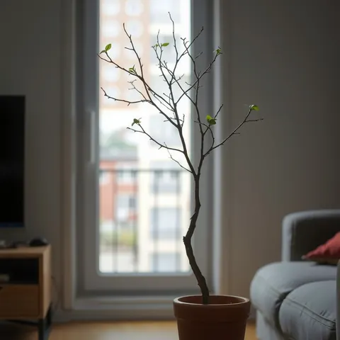
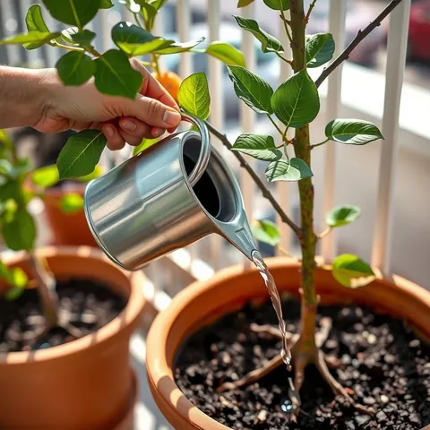
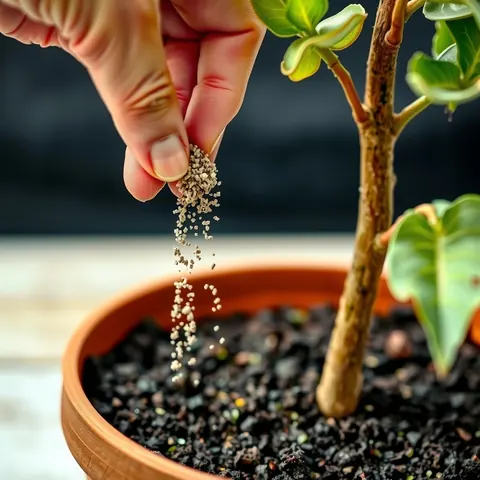
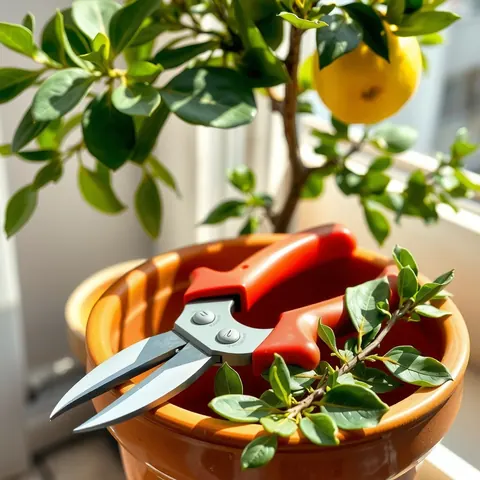
12 capítulos e 12 fichas, em linguagem simples. Arraste para o lado. Toque numa página para ampliar.
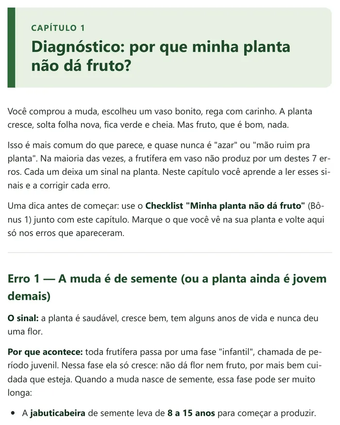
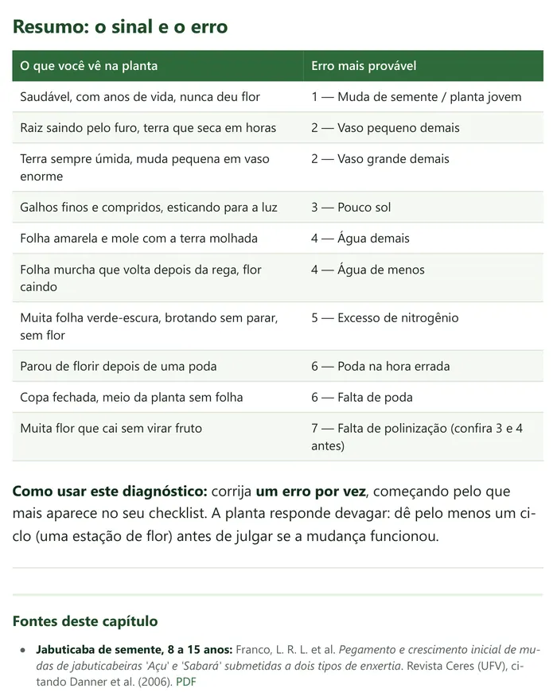
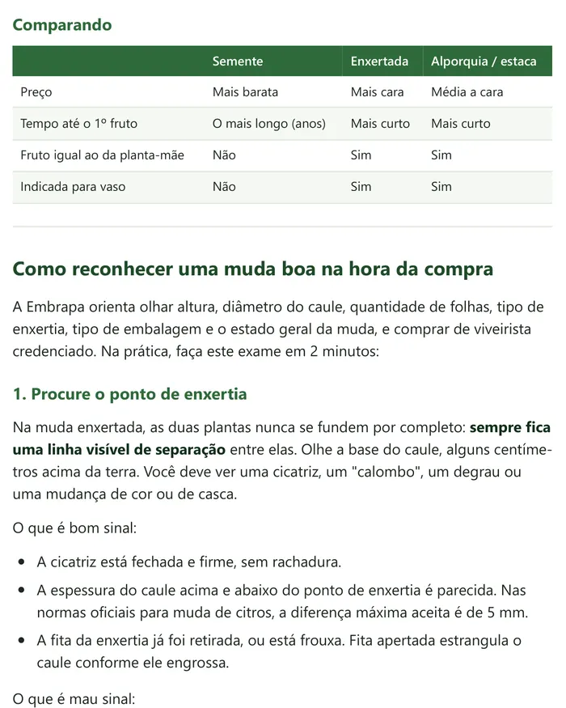
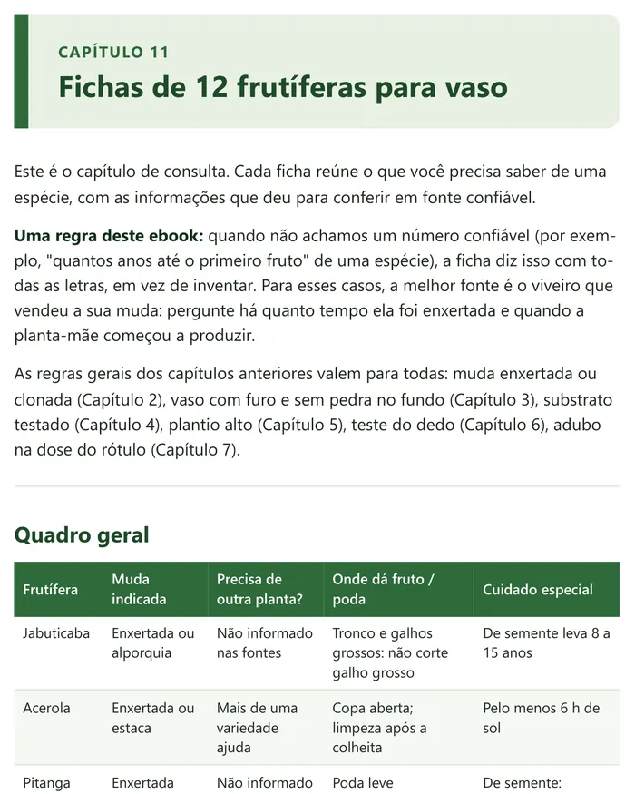
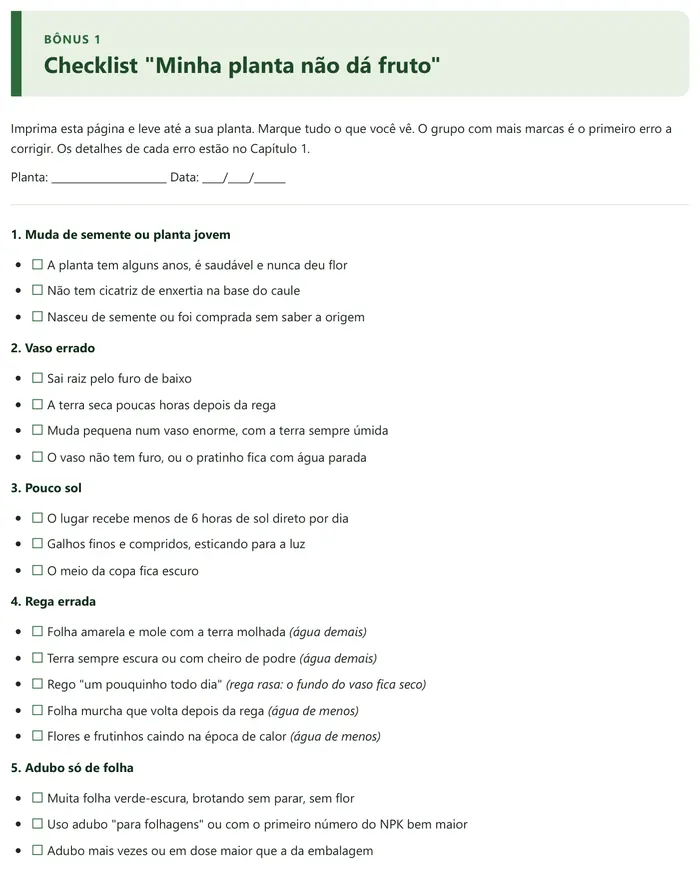
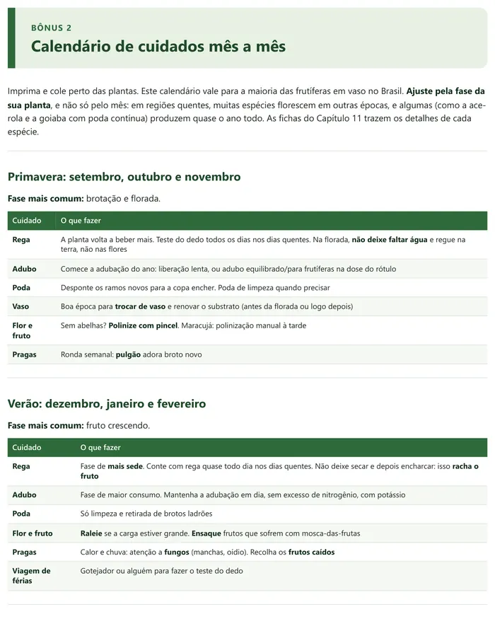
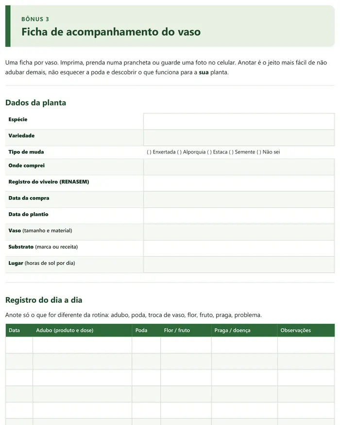
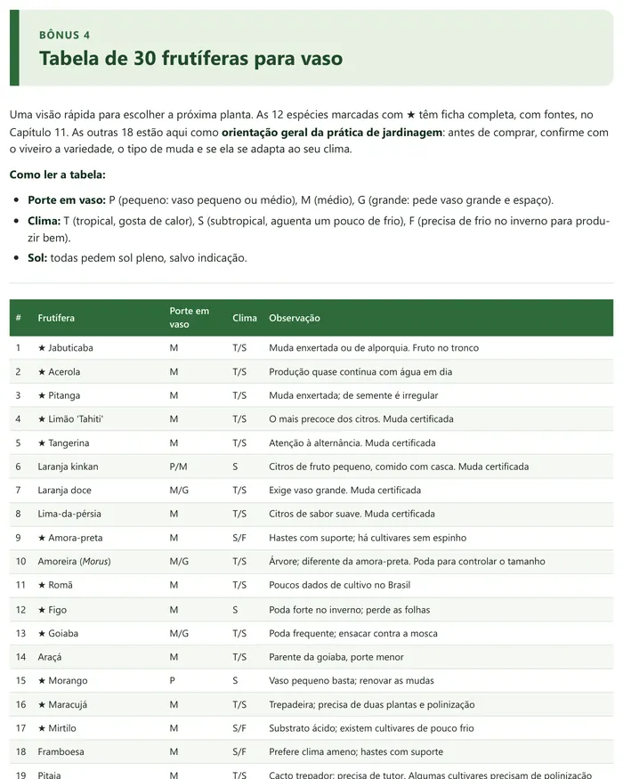
Ebook em PDF + 4 bônus para imprimir
pagamento único
Pagamento seguro pela Kiwify · Pix ou cartão
Garantia de 7 dias. Não gostou? Peça o reembolso pela plataforma e receba 100% de volta, sem perguntas.
Logo depois da confirmação do pagamento, você recebe o acesso por e-mail e baixa o PDF. Dá para ler no celular, no computador ou imprimir.
Sim. O guia foi feito para vaso: varanda, janela, qualquer lugar com sol. Também serve para quem mora de aluguel, porque o vaso vai junto na mudança.
Vai. O texto é simples, passo a passo, e explica cada termo técnico. Comece pelo Capítulo 1 e pelo checklist.
As regras do guia valem para todo o Brasil. As fichas e a tabela de 30 frutíferas indicam o clima de cada espécie.
Depende da espécie e da muda. O guia não promete prazo mágico: mostra o que as pesquisas dizem sobre cada espécie e o que fazer para não atrasar a produção.
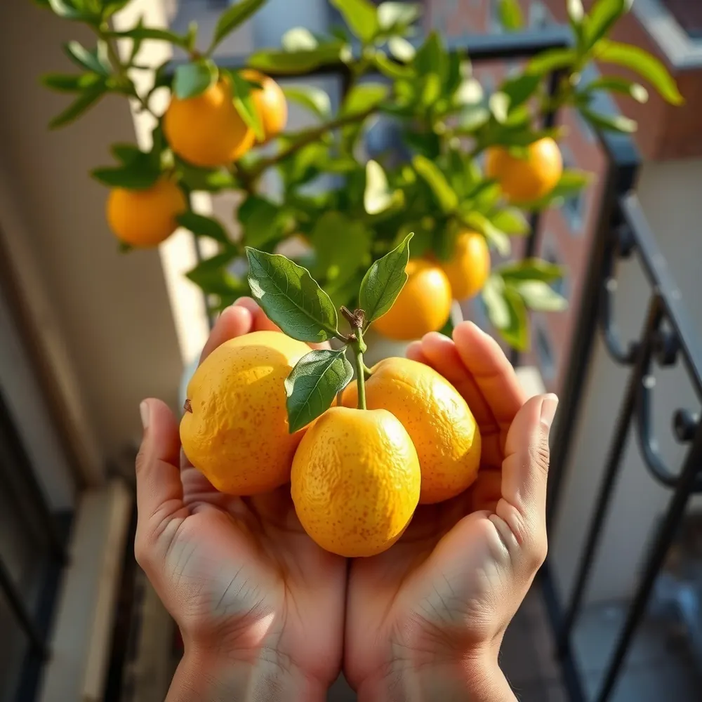